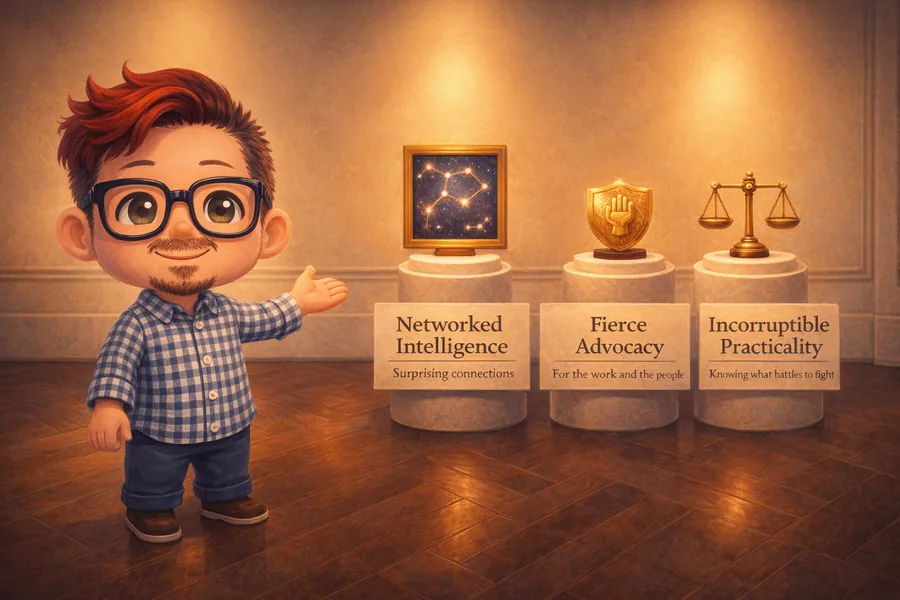
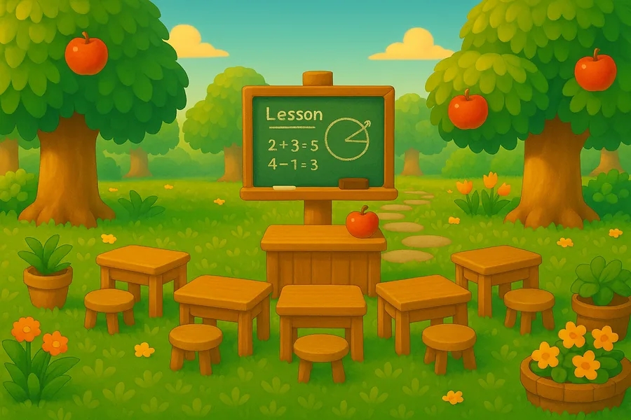
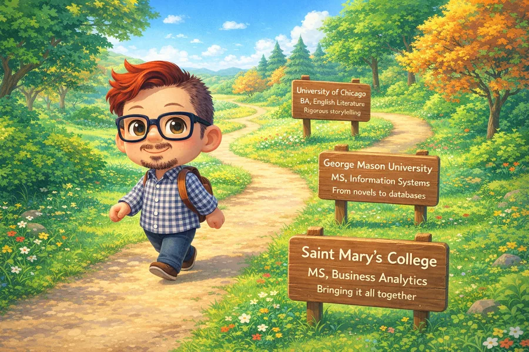

I studied English literature at the University of Chicago: structure, voice, audience, how writing carries an idea to a reader. I've been working on that same question ever since. My first job in tech was as a database administrator, a five-year stint before I moved into projects and analysis.
I live in San Francisco, making its transit better by day and finding its hidden public gardens on the weekend.
At home there are two adopted cats, Octavia and Cleopatra. I specialize in ferals. Patience, consistency, and a safe environment make all the difference, for cats and people both.
Three Things I Always Bring
As described by Mary Salome, a longtime friend and collaborator.

The ability to stay involved in what's happening in the world, especially in areas that matter — and bring sharp analysis to conversations. Going deep very quickly. Making connections across a wide range of topics. From the outside: a mind that is part of a whole being, involving a lot of heart, and very fast.
Standing up for people worth standing up for, and for what you believe in. Knowing what can't be compromised — and being able to say it even when it's a little scary. Extremely generous with the people and animals around you.
Moving forward in a world that doesn't have you in mind — in a way that is both completely honest and also accounts for the fact that some structures will take time to dismantle. Finding your way to be true to yourself while picking your battles. A survivor, who survives to keep using networked intelligence and fierce advocacy for good.
Teaching and Writing

Teaching
I've never had "teacher" in a job title, but it's something I keep ending up doing anyway. During my MS in Business Analytics, that meant being the one classmates came to when they were stuck — usually on something I'd already worked out, and I liked figuring out how to explain it so it made sense to them too. What works best, I've found, is a small hands-on exercise that starts simple and adds one layer at a time. For the cohort I built an hour-long intro to SQL that did exactly that: it opened with the most basic query and worked up, step by step, until people were writing queries that would have looked intimidating an hour earlier. The department head later invited me to come back and teach in the program; the timing hasn't worked out yet, but I'd like to.
The same thing happens at work. At SFMTA I co-sponsor a Power BI power user group, where I run demo sessions built on the same idea: I hand people sample data and walk them through setting something up themselves, like configuring row-level access controls. Figuring out how to make a complicated thing clear, then handing someone the steps to do it themselves, is the part of the work I like best.
Writing
Off the clock, I'm a fanatical reader — and writer — of feminist science fiction. The instinct that makes someone walk into an org and ask "why do we do it this way?" is, I think, the same one that draws me to a genre that takes the world apart and rebuilds it on different assumptions. Octavia, the cat, is named for Octavia E. Butler. Samuel R. Delany lives on the nightstand. The drafts live in a different folder than the dashboards — one of them was nominated for the Tiptree Award.
Education
